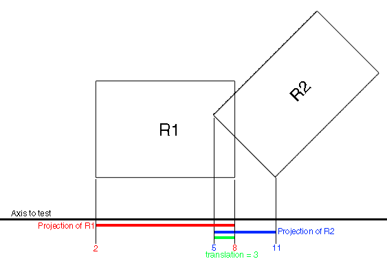
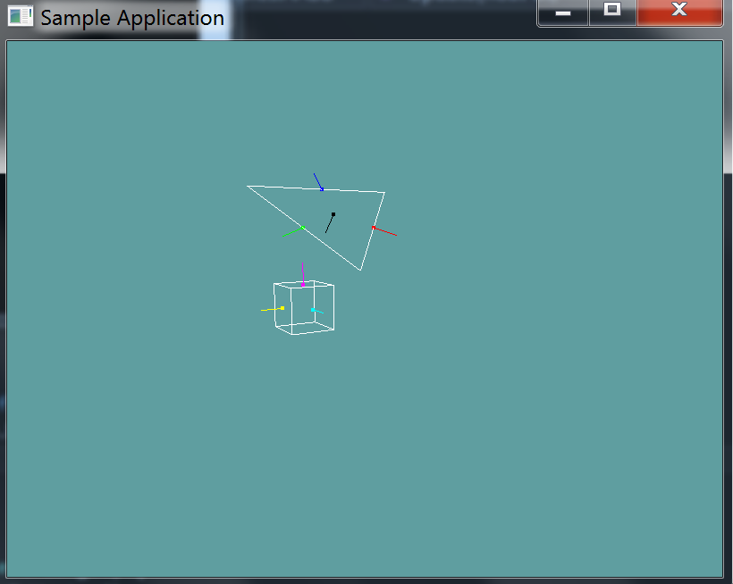
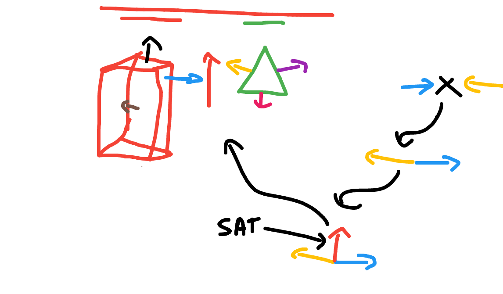
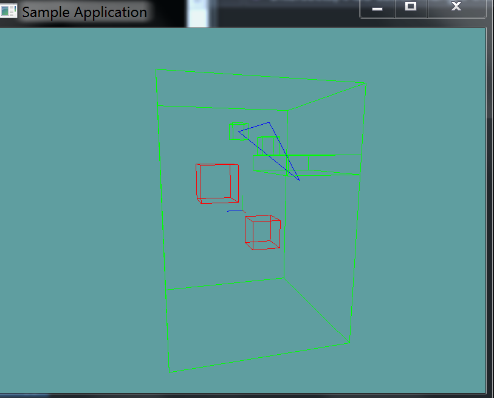

AABB Triangle intersection
Checking an AABB against a triangle is done using the Seperating Axis Therom or SAT. A great overview of the method can be found Here.
The theory behind the SAT is simple, for any two convex objects, if there exists an axis that seperates them, no collision occurs. Take the following image for example:

We have two boxes, and an axis to test them on. We project the two boxes onto the axis, the projections overlap, therefore the two boxes intersect on that axis. Here is a more complicated example of two triangles:

The triangles intersect on all projected axis. This means there is no axis of seperation, so there is an intersection.
In both of the above examples the primitives are projected onto an axis and the endpoints of their projected lines are tested for an intersection. There is a more optimal way to do this. We can translate both primitives so that one is at the center of the world.
When one primitive is at the center of the world, the projection test just needs to compare relative lengths, not fixed projected points.
AABB Triangle specific
An AABB v Triangle intersection test has a total of 13 axis which could potentially seperate it. They are:
- 9 axis given by the cross profucts of the combined edges of both
- 3 face normals from the AABB
- 1 face normal from the triangle
Consider the following image:

If we want to get the axis seperating the blue triangle normal and the magenta AABB normal, we have to cross the two vectors.
Blue X Magenta = SAT0
We get 9 separating axis by getting the cross product of each of the colored (NOT THE BLACK) normals.
We get 3 separating axis from the AABB: the cyan, magenta and yellow normals are all an axis of seperation
We get 1 separating axis from the black triangle normal. It is an axis of it's own.
That's how we get the 9 seperating axis.
Projecting
As mentioned before, we would normally project both of the primitives onto the seperating axis and compare the projected lines. But we can optimize this!
By subtracting the center of the AABB from both the AABB and the triangle
triangle.p0 -= aabb.center;
triangle.p1 -= aabb.center
triangle.p2 -= aabb.center;
aabb.center -= aabb.center
We put the AABB at the center of the world. Now, all we care about is the half-length of the projected AABB. We know it's center is at (0, 0). We simply compare the triangles projected points against the projected half-length.
The Algorithm
As mentioned earlyer, in order for a triangle and an AABB to intersect, all 13 axis have to be NON SEPERATED. When we find the first seperating axis, it's safe to return false.
public static bool Intersects(Triangle triangle, AABB aabb) {
// Get the triangle points as vectors
Vector3 v0 = triangle.p0.ToVector();
Vector3 v1 = triangle.p1.ToVector();
Vector3 v2 = triangle.p2.ToVector();
// Convert AABB to center-extents form
Vector3 c = aabb.Center.ToVector();
Vector3 e = aabb.Extents;
// Translate the triangle as conceptually moving the AABB to origin
// This is the same as we did with the point in triangle test
v0 -= c;
v1 -= c;
v2 -= c;
// Compute the edge vectors of the triangle (ABC)
// That is, get the lines between the points as vectors
Vector3 f0 = v1 - v0; // B - A
Vector3 f1 = v2 - v1; // C - B
Vector3 f2 = v0 - v2; // A - C
// Compute the face normals of the AABB, because the AABB
// is at center, and of course axis aligned, we know that
// it's normals are the X, Y and Z axis.
Vector3 u0 = new Vector3(1.0f, 0.0f, 0.0f);
Vector3 u1 = new Vector3(0.0f, 1.0f, 0.0f);
Vector3 u2 = new Vector3(0.0f, 0.0f, 1.0f);
// There are a total of 13 axis to test!
// We first test against 9 axis, these axis are given by
// cross product combinations of the edges of the triangle
// and the edges of the AABB. You need to get an axis testing
// each of the 3 sides of the AABB against each of the 3 sides
// of the triangle. The result is 9 axis of seperation
// https://awwapp.com/b/umzoc8tiv/
// Compute the 9 axis
Vector3 axis_u0_f0 = Vector3.Cross(u0, f0);
Vector3 axis_u0_f1 = Vector3.Cross(u0, f1);
Vector3 axis_u0_f2 = Vector3.Cross(u0, f2);
Vector3 axis_u1_f0 = Vector3.Cross(u1, f0);
Vector3 axis_u1_f1 = Vector3.Cross(u1, f1);
Vector3 axis_u1_f2 = Vector3.Cross(u2, f2);
Vector3 axis_u2_f0 = Vector3.Cross(u2, f0);
Vector3 axis_u2_f1 = Vector3.Cross(u2, f1);
Vector3 axis_u2_f2 = Vector3.Cross(u2, f2);
// Testing axis: axis_u0_f0
// Project all 3 vertices of the triangle onto the Seperating axis
float p0 = Vector3.Dot(v0, axis_u0_f0);
float p1 = Vector3.Dot(v1, axis_u0_f0);
float p2 = Vector3.Dot(v2, axis_u0_f0);
// Project the AABB onto the seperating axis
// We don't care about the end points of the prjection
// just the length of the half-size of the AABB
// That is, we're only casting the extents onto the
// seperating axis, not the AABB center. We don't
// need to cast the center, because we know that the
// aabb is at origin compared to the triangle!
float r = e.X * Math.Abs(Vector3.Dot(u0, axis_u0_f0)) +
e.Y * Math.Abs(Vector3.Dot(u1, axis_u0_f0)) +
e.Z * Math.Abs(Vector3.Dot(u2, axis_u0_f0));
// Now do the actual test, basically see if either of
// the most extreme of the triangle points intersects r
// You might need to write Min & Max functions that take 3 arguments
if (Max(-Max(p0, p1, p2), Min(p0, p1, p2)) > r) {
// This means BOTH of the points of the projected triangle
// are outside the projected half-length of the AABB
// Therefore the axis is seperating and we can exit
return false;
}
// Repeat this test for the other 8 seperating axis
// You may wish to make some kind of a helper function to keep
// things readable
TODO: 8 more SAT tests
// Next, we have 3 face normals from the AABB
// for these tests we are conceptually checking if the bounding box
// of the triangle intersects the bounding box of the AABB
// that is to say, the seperating axis for all tests are axis aligned:
// axis1: (1, 0, 0), axis2: (0, 1, 0), axis3 (0, 0, 1)
TODO: 3 SAT tests
// Do the SAT given the 3 primary axis of the AABB
// You already have vectors for this: u0, u1 & u2
// Finally, we have one last axis to test, the face normal of the triangle
// We can get the normal of the triangle by crossing the first two line segments
Vector3 triangleNormal = Vector3.Cross(f0, f1);
TODO: 1 SAT test
// Passed testing for all 13 seperating axis that exist!
return true;
}
This is the image references in the code as https://awwapp.com/b/umzoc8tiv/

On Your Own
Add the following function to the Collisions class:
public static bool Intersects(Triangle triangle, AABB aabb)
public static bool Intersects(AABB aabb, Triangle triangle) {
return Intersects(triangle, aabb);
}
And provide an implementation for it! The code provided above should serve as a solid guide for doing this
Unit Test
You can Download the samples for this chapter to see if your result looks like the unit test.
This unit test will render out a triangle and several AABB's. If an AABB is intersecting the triangle it is rendered in green, if it isn't it's rendered in red.
The constructor of the unit test will throw errors if your code is off.

using OpenTK.Graphics.OpenGL;
using Math_Implementation;
using CollisionDetectionSelector.Primitives;
namespace CollisionDetectionSelector.Samples {
class TriangleAABBIntersection : Application {
AABB[] aabbs = new AABB[] {
new AABB(new Point(2, 4, -1), new Vector3(0.5f, 0.5f, 0.5f)),
new AABB(new Point(-1.0f, 5.0f, 0.0f), new Vector3(0.5f, 0.5f, 0.5f)),
new AABB(new Point(0.0f, 0.0f, 0.0f), new Vector3(5f, 7f, 5f)),
new AABB( new Point(2.0f, 3.0f, -3.0f), new Vector3(3f, 0.5f, 2f)),
new AABB(new Point(2f, 2f, 2f), new Vector3(1.0f, 1.0f, 1.0f)),
new AABB(new Point(-2f, -2f, -2f), new Vector3(1.0f, 1.0f, 1.0f))
};
Triangle triangle = new Triangle(new Point(-1.0f, 5.0f, 0.0f), new Point(2.0f, 2.0f, -3.0f), new Point(5.0f, 5.0f, 0.0f));
public override void Intialize(int width, int height) {
GL.Enable(EnableCap.DepthTest);
GL.PointSize(4f);
GL.Disable(EnableCap.CullFace);
GL.PolygonMode(MaterialFace.FrontAndBack, PolygonMode.Line);
bool[] expected = new bool[] { true, true, true, true, false, false };
for (int i = 0; i < aabbs.Length; ++i) {
bool result = Collisions.Intersects(triangle, aabbs[i]);
if (result != expected[i]) {
LogError("Expected aabb " + i + " to " +
(expected[i] ? " intersect" : " NOT intersect") +
" the triangle");
}
}
}
public override void Render() {
base.Render();
DrawOrigin();
GL.Color3(0.0f, 0.0f, 1.0f);
triangle.Render();
foreach (AABB aabb in aabbs) {
if (Collisions.Intersects(triangle, aabb)) {
GL.Color3(0f, 1f, 0f);
}
else {
GL.Color3(1f, 0f, 0f);
}
aabb.Render();
}
}
}
}